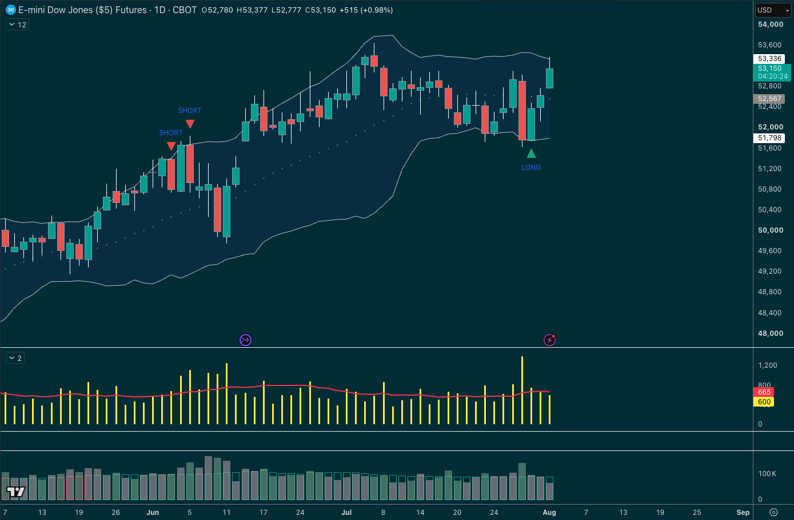

So this evening we continue with the trading strategy teardown Pepperstone webinars.
And this one's called “The Thief Strategy”
Why?
Because the inventor says, “It's like stealing money” 😀
And yeah, that would normally make me wince too… but this was from the man who invented Bollinger bands, John Bollinger…
THE THIEF STRATEGY

Now this is his lesser-known mean reversion strategy once shared with a small group of traders in London.
Let me take you back a few years….
I was at a Pepperstone trading conference in London, a small rooftop event with a selection of clients and speakers invited.
One of those was John Bollinger himself; he'd flown in from the US to speak.
And one of the things he shared was this thief strategy…
A reversal timing strategy using, of course, Bollinger Bands. (This was not one discussed in his book, and in fact he once messaged me about it…. Details tonight.)
So that's going to be our focus this evening:
- The strategy rules
- Where it works, where it struggles
- How we could layer in context
- Who it might work for
- And some different timeframe ideas…
Should be a good one.
PS: Last week's slides are in the GDrive folder below 👇
Recording: Bollinger Band Thief Strategy | Mon, Aug 10, '26 19:01
This webinar covered the Bollinger Band Thief in full - the setup, the rules and the honest account of where it works and where it doesn't. Watch your full recording.